Stable-Baselines3 (SB3)
Outline
- Stable-Baselines3 Overview
- Questions?
- DQN in Stable-Baselines3
Hands-on Session with SB3
Full video: https://rl-vs.github.io/rlvs2021/tips-and-tricks.html
Stable-Baselines3 Overview
History of the project
To fork or not to fork? (2018)

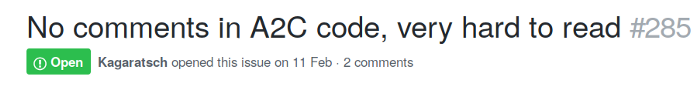
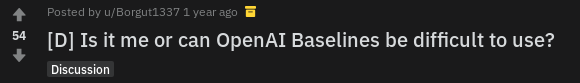

Stable-Baselines?
from stable_baselines import A2C
model = A2C("MlpPolicy", "CartPole-v1")
model.learn(50000)
model.save("a2c_cartpole")
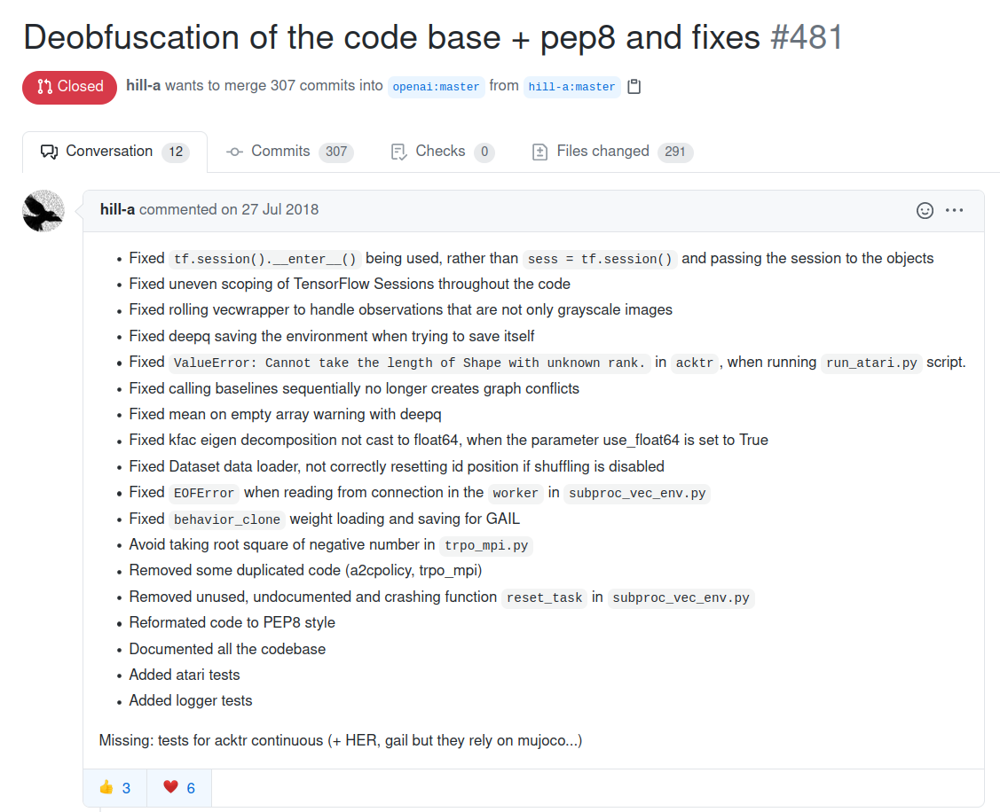
Stable-Baselines (2018-2020)
Ashley Hill, Maximilian Ernestus, Adam Gleave, Anssi Kanervisto
https://github.com/hill-a/stable-baselines
- 5 maintainers
- 60+ contributors
- 1000+ issues / pull requests
- 300+ citations
Stable-Baselines3 (2020-...)
https://github.com/DLR-RM/stable-baselines3
- cleaner codebase but same API
- performance checked
- code coverage: 95%
- active community
Active Community
Stable-Baselines (SB2)
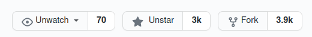
Stable-Baselines3 (SB3)
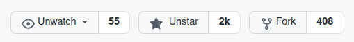
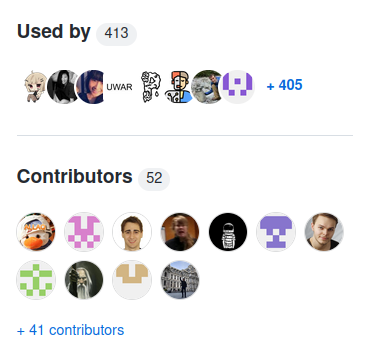
Design Principles
- reliable implementations of RL algorithms
- user-friendly
- focus on model-free, single-agent RL
- favour readability and simplicity over modularity
Features
- algorithms: A2C, DDPG, DQN, HER, PPO, SAC and TD3
- clean and simple interface
- fully documented
- comprehensive (tensorboard logging, callbacks, ...)
- training framework included (RL Zoo)
- SB3 Contrib: QR-DQN, TQC, ...
Getting Started
import gym
from stable_baselines3 import SAC
# Train an agent using Soft Actor-Critic on Pendulum-v0
env = gym.make("Pendulum-v0")
model = SAC("MlpPolicy", env, verbose=1)
# Train the model
model.learn(total_timesteps=20000)
# Save the model
model.save("sac_pendulum")
# Load the trained model
model = SAC.load("sac_pendulum")
# Start a new episode
obs = env.reset()
# What action to take in state `obs`?
action, _ = model.predict(obs, deterministic=True)
SB3 Training loop
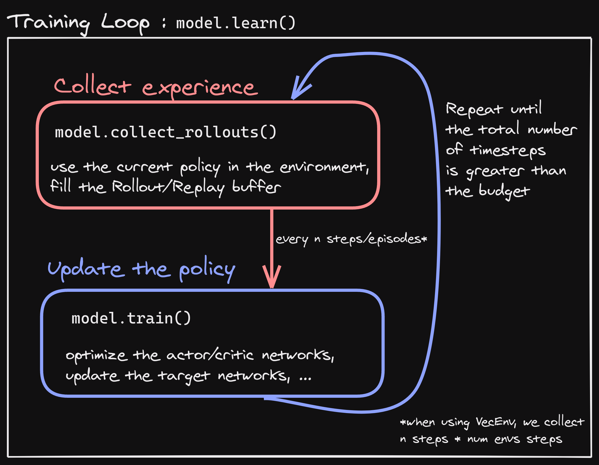Training framework: RL Zoo
https://github.com/DLR-RM/rl-baselines3-zoo
- training, loading, plotting, hyperparameter optimization
- 100+ trained models + tuned hyperparameters
# Train an A2C agent on Atari breakout using tuned hyperparameters,
# evaluate the agent every 10k steps and save a checkpoint every 50k steps
python train.py --algo a2c --env BreakoutNoFrameskip-v4 \
--eval-freq 10000 --save-freq 50000
# Plot the learning curve
python scripts/all_plots.py -a a2c -e BreakoutNoFrameskip-v4 -f logs/
Recap
- reliable RL implementations
- user-friendly
- training framework (RL Zoo)
Questions?
DQN in SB3
Reminder
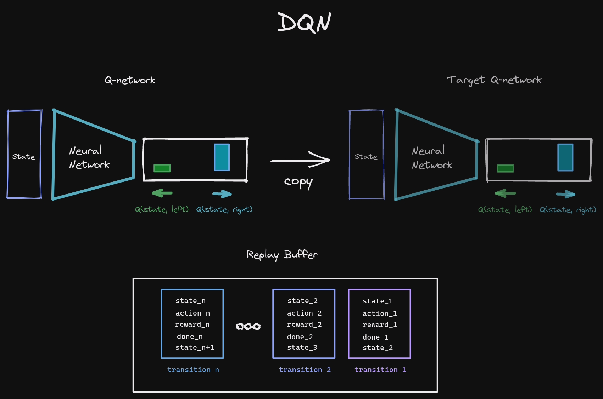
Anatomy
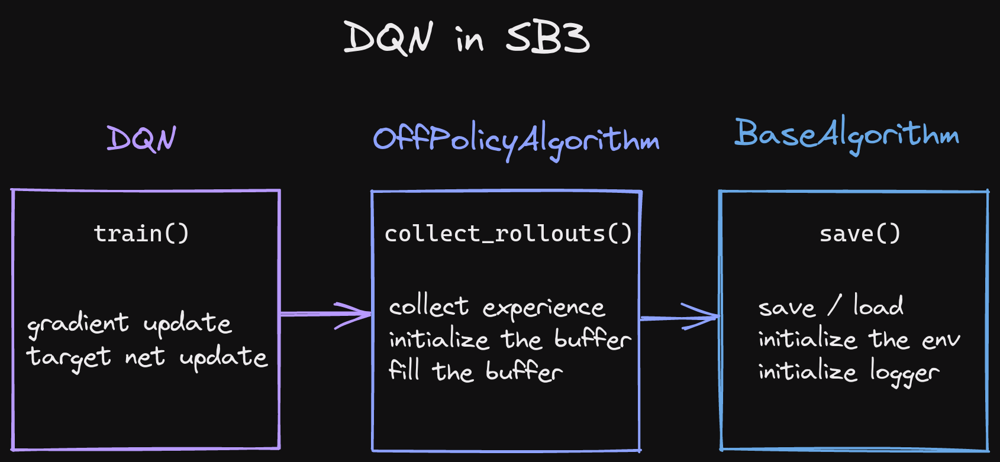
SB3 Training loop
Q-network
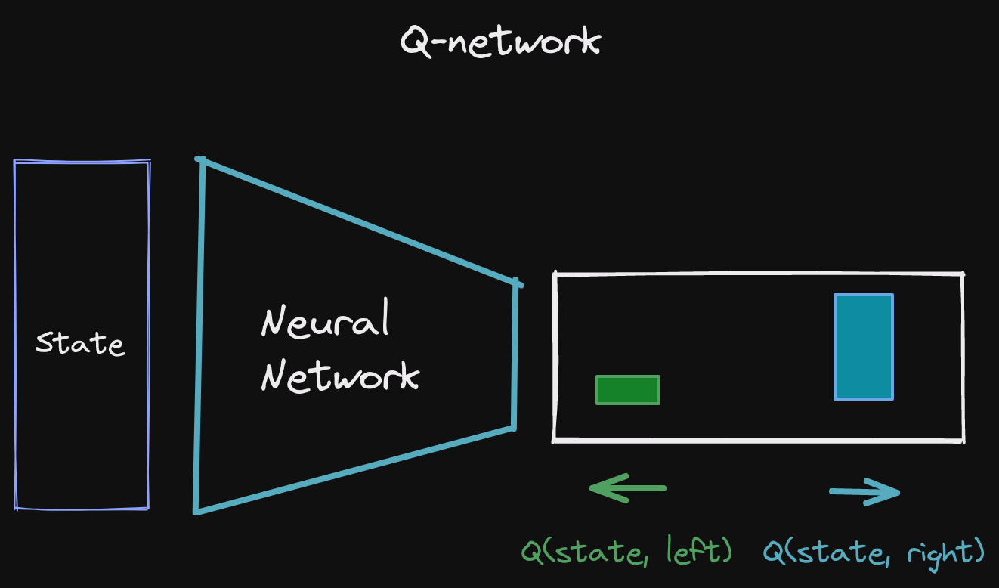
Q-network (Code)
dqn/policies.py
def _build(self, lr_schedule: Schedule) -> None:
self.q_net = self.make_q_net()
self.q_net_target = self.make_q_net()
self.q_net_target.load_state_dict(self.q_net.state_dict())
# Setup optimizer with initial learning rate
self.optimizer = self.optimizer_class(self.parameters(), lr=lr_schedule(1))
class QNetwork:
# ...
action_dim = self.action_space.n # number of actions
self.q_net = create_mlp(features_dim, action_dim, net_arch, activation_fn)
# ...
def _predict(self, observation: th.Tensor) -> th.Tensor:
q_values = self.forward(observation)
# Greedy action
action = q_values.argmax(dim=1)
return action
Network architecture

Replay Buffer
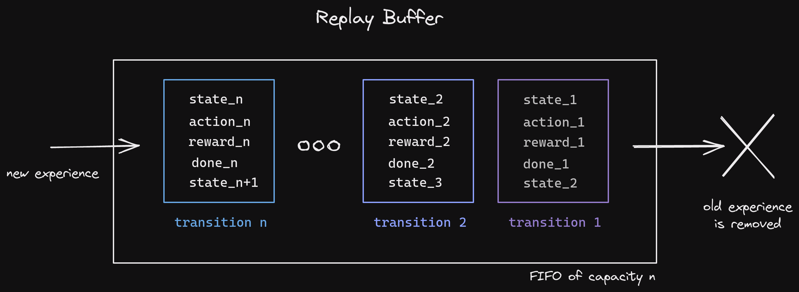
Replay Buffer Sampling
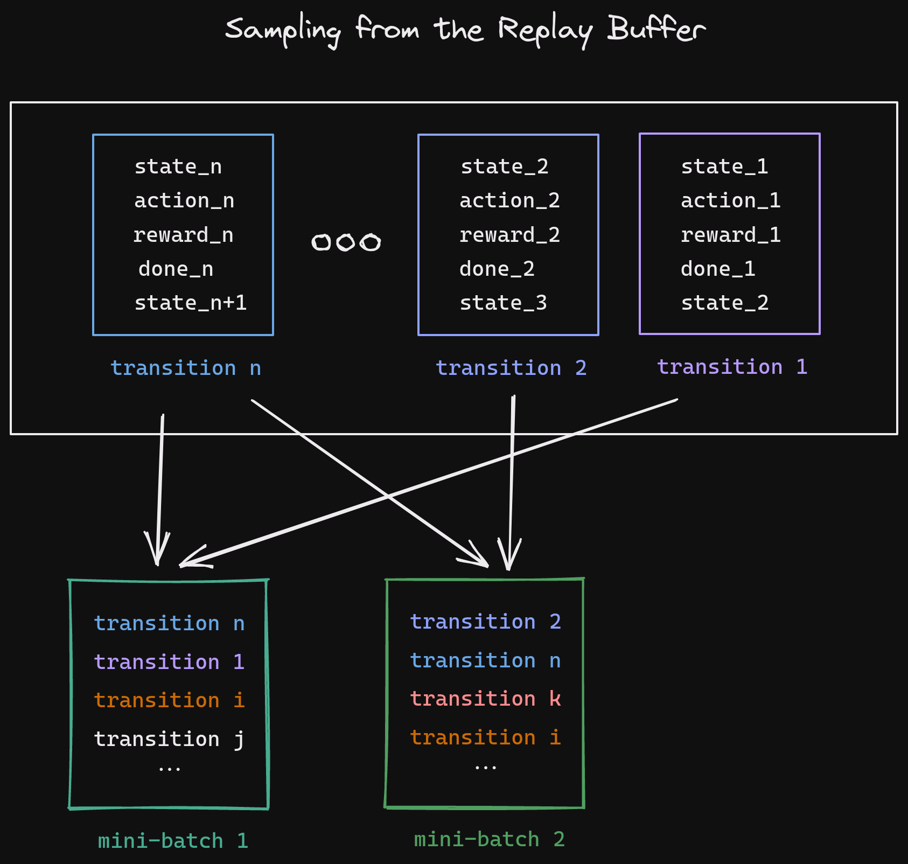
Replay Buffer (Code)
common/buffers.py
class ReplayBuffer(BaseBuffer):
# ...
self.observations = np.zeros((self.buffer_size,) + self.obs_shape)
self.next_observations = np.zeros((self.buffer_size,) + self.obs_shape)
self.actions = np.zeros((self.buffer_size, self.action_dim))
self.rewards = np.zeros((self.buffer_size,))
self.dones = np.zeros((self.buffer_size,))
def add(
self,
obs: np.ndarray,
next_obs: np.ndarray,
action: np.ndarray,
reward: np.ndarray,
done: np.ndarray,
infos: List[Dict[str, Any]],
) -> None:
# Copy to avoid modification by reference
self.observations[self.pos] = np.array(obs)
self.next_observations[self.pos] = np.array(next_obs)
self.actions[self.pos] = np.array(action)
self.rewards[self.pos] = np.array(reward)
self.dones[self.pos] = np.array(done)
self.pos += 1
if self.pos == self.buffer_size:
self.full = True
self.pos = 0
def sample(self, batch_size: int) -> ReplayBufferSamples:
upper_bound = self.buffer_size if self.full else self.pos
batch_inds = np.random.randint(0, upper_bound, size=batch_size)
return self._get_samples(batch_inds)
Collecting Experience
Collecting Experience (Code)
common/off_policy_algorithm.py
def collect_rollouts(
self,
env: VecEnv,
train_freq: TrainFreq,
replay_buffer: ReplayBuffer,
learning_starts: int = 0,
log_interval: Optional[int] = None,
):
"""
Collect experiences and store them into a ``ReplayBuffer``.
"""
while should_collect_more_steps(train_freq, num_collected_episodes):
done = False
while not done: # Loop until the end of an episode
# Select action randomly or according to policy
action = self._sample_action(learning_starts)
# Perform action
new_obs, reward, done, infos = env.step(action)
# Store data in replay buffer
self._store_transition(action, new_obs, reward, done, infos)
# For DQN, check if the target network should be updated
# and update the exploration schedule
self._on_step()
if done:
self._episode_num += 1
# Log training infos
if log_interval is not None and self._episode_num % log_interval == 0:
self._dump_logs()
def predict(
self,
observation: np.ndarray,
deterministic: bool = False,
) -> Tuple[np.ndarray, Optional[np.ndarray]]:
# Epsilon-greedy exploration
if not deterministic and np.random.rand() < self.exploration_rate:
action = np.array(self.action_space.sample())
else:
action, _state = self.q_net.predict(observation)
return action, _state
Training the network
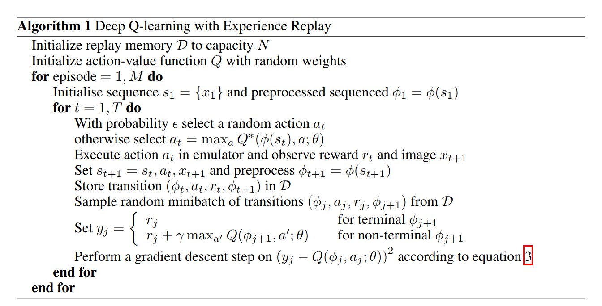
Training the network (Code)
common/dqn.py
def train(self, gradient_steps: int, batch_size: int = 100) -> None:
for _ in range(gradient_steps):
# Sample replay buffer
replay_data = self.replay_buffer.sample(batch_size)
with th.no_grad():
# Compute the next Q-values using the target network
next_q_values = self.q_net_target(replay_data.next_observations)
# Follow greedy policy: use the one with the highest value
next_q_values, _ = next_q_values.max(dim=1)
# 1-step TD target
target_q_values = replay_data.rewards + (1 - replay_data.dones) * self.gamma * next_q_values
# Get current Q-values estimates
current_q_values = self.q_net(replay_data.observations)
# Retrieve the q-values for the actions from the replay buffer
current_q_values = th.gather(current_q_values, dim=1, index=replay_data.actions.long())
# Compute Huber loss (less sensitive to outliers)
loss = F.smooth_l1_loss(current_q_values, target_q_values)
# Optimize the Q-network
self.policy.optimizer.zero_grad()
loss.backward()
self.policy.optimizer.step()
Bonus: VecEnv
https://excalidraw.com/Recap
- Q-Network and target network (dqn/policies.py)
- Replay buffer (common/buffers.py)
- Collecting experience (common/off_policy_algorithm.py)
- Training the network (dqn/dqn.py)
Backup Slides
SB3 vs other libs
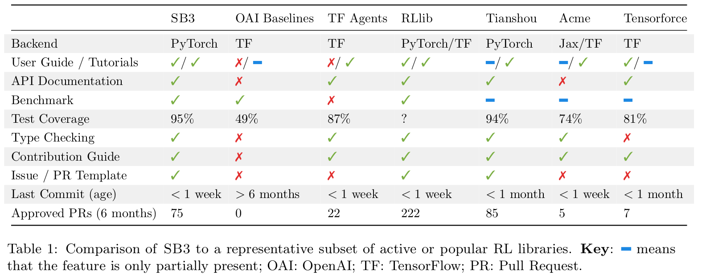SB3 policy
Network Architecture
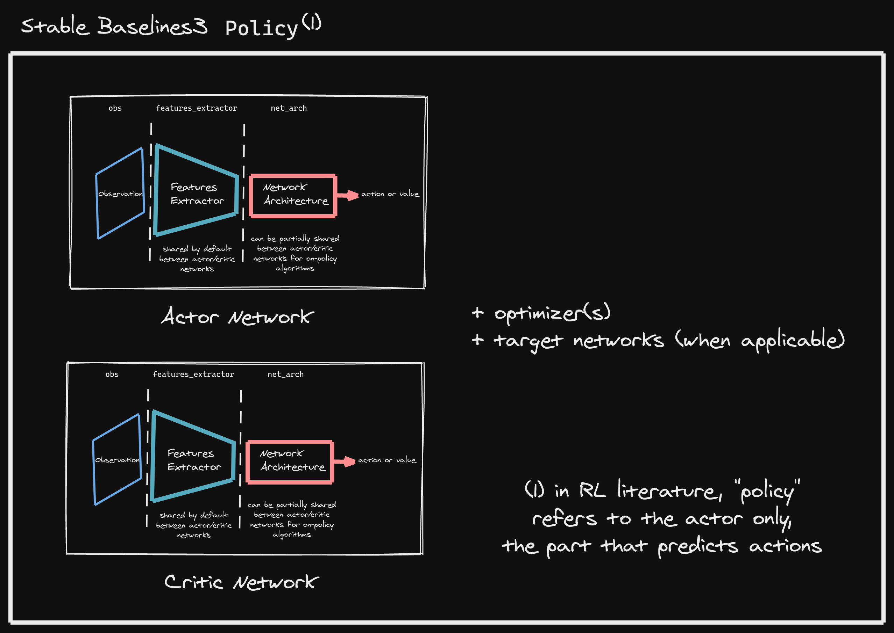